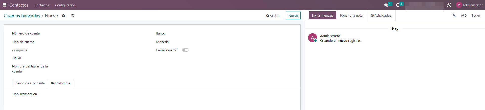
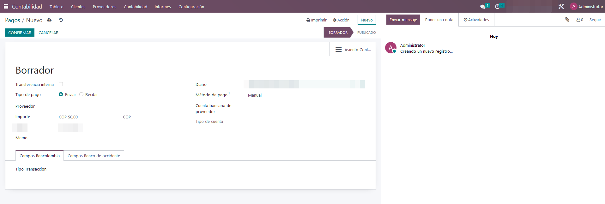
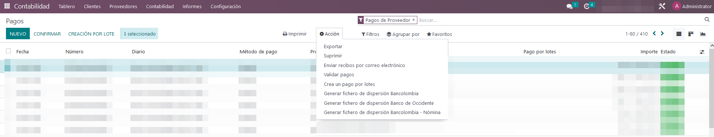
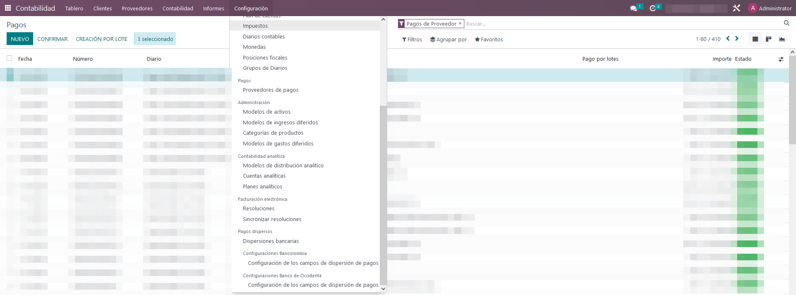
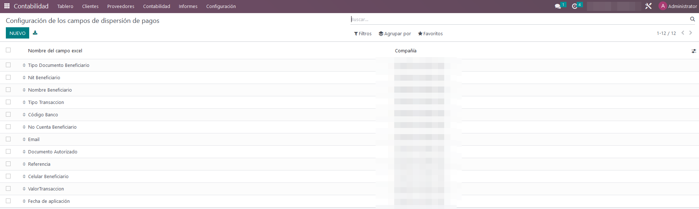
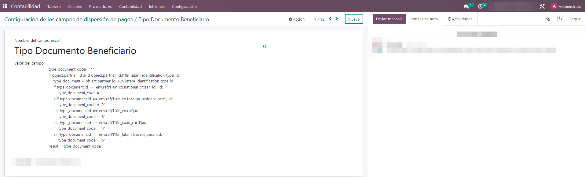

Dispersión de pagos (Banco de Occidente)
Este módulo facilita la generación de un archivo .xlsx conforme a los lineamientos establecidos por el Banco de Colombia en su macro de PAB para la construcción del archivo requerido para la dispersión bancaria en su plataforma.
En las cuentas bancarias se añade un campo adicional: "Tipo de transacción". Este campo se transfiere automáticamente al formulario de pago a proveedores cuando se selecciona la cuenta del tercero.


En los pagos, se crean 2 acciones:
-
Generar fichero de dispersión Bancolombia
-
Generar fichero de dispersión Bancolombia - Nómina
Estas acciones se generan según el tipo que se asigna en la macro PAB. Si se trata de una nómina, se utiliza el código 225, mientras que si es un pago a proveedores, se utiliza el código 220.

En el menú de configuración de la aplicación de facturación, se incluye un nuevo submenú llamado "Configuraciones Bancolombia" dentro de "Dispersiones bancarias". Aquí se ubicará el formulario para configurar los campos que constituirán el cuerpo del archivo que se usa para copiar dentro de la macro PAB


Los campos para la configuración del archivo constan de los siguientes elementos:
-
Nombre: Es el nombre descriptivo del campo.
-
Valor del campo: Viene predefinido con valores por defecto, pero también se pueden definir expresiones en Python. Estas expresiones se evaluarán al ejecutar la función que genera el archivo.
importante resaltar que la secuencia de los campos no debe alterarse, ya que esta determina las posiciones dentro del archivo.

Cuando se activa la acción para generar el archivo de dispersión del Bancolombia, el sistema descarga el archivo y, simultáneamente, crea un registro en el menú "Dispersiones bancarias" dentro de la sección de "Facturación/Proveedores".